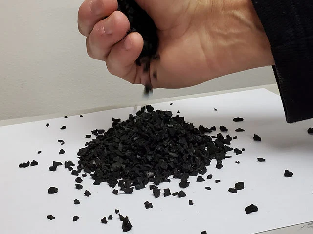

Processing & bulk loading
From clean manufacturing scrap to tanker-ready crumb, Heffco works with rubber and plastic at each stage of reuse.

Rubber & plastic processing
Ambient and cryogenic grinding are available for tire rubber, EPDM, nitrile, butyl, neoprene, SBR and fluoroelastomers. Plastics include PVC, EVA, TPE, polypropylene, ABS and melamine.
Cryogenic grinding and air separation can recover base polymers from laminated foam, plating or fibre.
Industrial scrap enquiries
Heffco purchases clean cured trim, transfer pads, buffings, film, purgings, sprues and runners. Include the polymer, volume, packaging, location and any contamination.
Discuss scrap processing
Dry bulk tanker loading
Heffco’s custom process loads trailers in under two hours. Materials handled include crumb rubber for paving and sealants, plastic powders, recycled polymers, minerals and limestone.
Ask about bulk loading